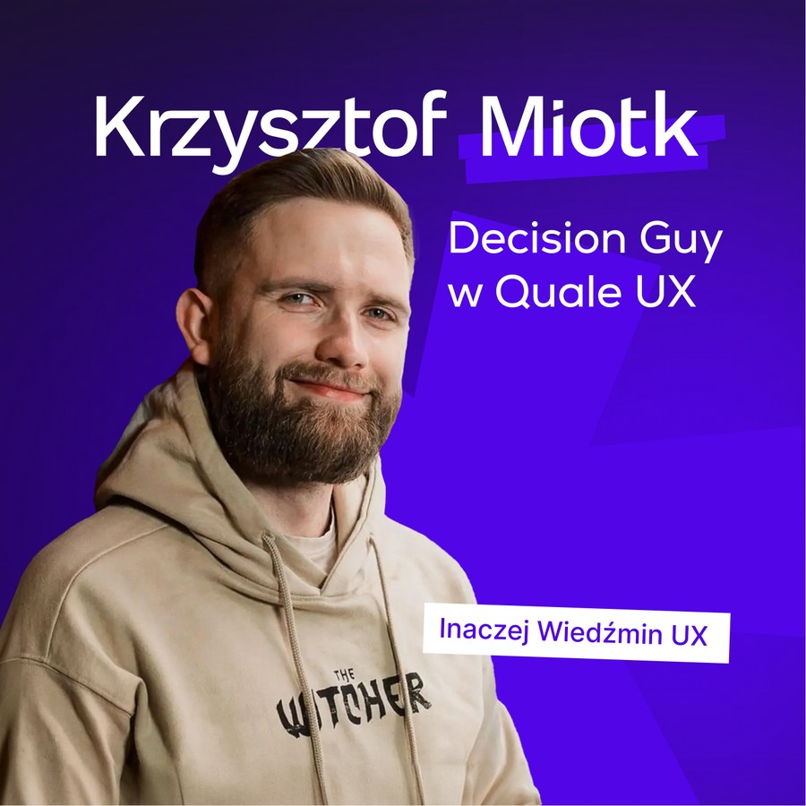

O mnie
Krzysztof Miotk
UX Researcher i konsultant. Zamieniam wiedzę o użytkownikach w wartość dla biznesu — i uczę zespoły robić to samodzielnie.

Badania w służbie biznesu
Wierzę, że badania są przydatne tylko wtedy, gdy służą biznesowi. Dlatego nie dostarczam raportów do szuflady — pracuję na decyzjach. Pokazuję markom, gdzie tracą pieniądze w doświadczeniu klienta i co konkretnie zrobić, żeby je odzyskać.
Pomagam silnym markom zwiększać konwersję i wartość klienta w czasie dzięki User Experience opartemu na danych, a nie na opiniach.
Praktyk i nauczyciel
Od 2017 roku wykładam i prowadzę zajęcia z UX research — odpowiadam m.in. za jedyny w Polsce kierunek studiów poświęcony badaniom UX. Łączę praktykę konsultanta z dydaktyką, dzięki czemu wiedza, którą przekazuję, jest świeża i osadzona w realnych projektach.
Po wystąpieniach konferencyjnych w 2023 roku przylgnął do mnie przydomek „UX Wiedźmin”. Współtworzę też „UX po Godzinach” — najstarszy aktywny podcast o UX w Polsce.
Poza ekranem
Jestem instruktorem harcerskim w stopniu podharcmistrza. Po godzinach działam w ratownictwie i pływam pod żaglami — to tam ćwiczę spokój, decyzyjność i pracę zespołową, które przenoszę do projektów.
„Badania są przydatne tylko wtedy, gdy służą biznesowi.”
— Krzysztof Miotk
Zacznijmy
Porozmawiajmy o Twoim produkcie
Umów bezpłatną konsultację — opowiesz mi o wyzwaniu, a ja podpowiem, od czego zacząć, żeby badania realnie wsparły biznes.
Umów konsultację